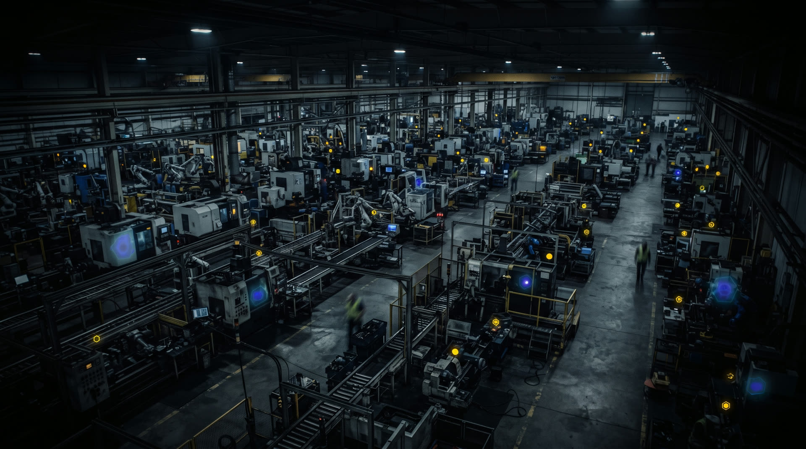

This is your hero. Replace this paragraph with one sentence that tells the audience what this deck is about, who it's for, and why it matters right now.
Guidance: summarize what the reader already knows before you introduce the problem. Keep it factual, short, and free of jargon.
One or two lines of relevant history or context — how did we get here?
What's true today. The starting point for the rest of your narrative.
An existing asset, capability, or proof point you can build the rest of the story on.
The hook: a single compelling fact, quote, or data point that pulls the reader in. Keep it to one or two sentences.
Cite your data sources here.
Guidance: describe what's fragmented, duplicated, or inefficient about the current state. This card is a visual, not a literal template — relabel the rows to whatever you're comparing.
Guidance: describe the unified/ideal state — what changes once the problem is solved.
What does the problem cost today — time, money, or effort?
How does the problem slow down delivery, releases, or decisions?
How does the problem affect how customers, partners, or the market see you?
What's the risk or cost of doing nothing?*
* Cite your source for any figure you use here.
Describe one core pillar of your approach in one or two sentences.
Describe a second pillar — what changes structurally, technically, or operationally.
Describe a third pillar — often about cadence, process, or how work ships.
Describe a fourth pillar — the forward-looking or differentiating piece.
Guidance: what happens first. Keep this phase focused on discovery, alignment, and protecting what already works.
Describe the specific task, who owns it, and why it matters.
Describe the specific task, who owns it, and why it matters.
Describe the specific task, who owns it, and why it matters.
Describe the specific task, who owns it, and why it matters. Explain what this sets up for Phase 2.
Guidance: where the real work happens. Usually the longest and highest-risk phase — be specific about resourcing here.
Describe the specific task, who owns it, and why it matters.
Describe the specific task, who owns it, and why it matters.
Describe the specific task, who owns it, and why it matters.
Describe the specific task, who owns it, and why it matters. Explain what this sets up for Phase 3.
Guidance: how this phase turns into an ongoing plan the audience can commit to and fund.
Describe the specific task, who owns it, and why it matters.
Describe the specific task, who owns it, and why it matters.
Describe the specific task, who owns it, and why it matters.
Describe the specific task, who owns it, and why it matters. Tie this back to the Timeline section below.
Guidance: four columns is just a starting point — add, remove, or relabel stages to fit your own timeline. Cite sources for any figures here.
Guidance: explain what's already funded and what this ask adds on top of it. Being explicit about the incremental cost — not the whole budget — makes the ask easier to approve.
Add any supporting context here — growth trend, prior investment, or why this compounds something already working.*
* Cite your source here.
Guidance: use this card to show how a new team or hire relates to the existing team — shared skills, dedicated specialties, and how knowledge transfers both ways.
Guidance: show a small set of scenarios (conservative / base / upside) so the audience can see your assumptions rather than a single unverifiable number.
| Scenario | Growth assumption | 3-yr outcome | Delta vs. baseline | Net vs. spend | ROI multiple |
|---|---|---|---|---|---|
| Baseline (no change) | XX% / XX% / XX% | $X.XM | — | — | — |
| Conservative | XX% / XX% / XX% | $X.XM | $X.XM | $X.XM | X.Xx |
| Base | XX% / XX% / XX% | $X.XM | $X.XM | $X.XM | X.Xx |
| Upside | XX% / XX% / XX% | $X.XM | $X.XM | $X.XM | X.Xx |
Guidance: explain when payback happens and what triggers it — e.g. once specific milestones from the Timeline section ship.
Guidance: state your assumptions plainly and note that they're your own projection, not third-party verified — invite the audience to refine them with you.
Guidance: state what these figures exclude (e.g. existing baseline costs already budgeted) so the ask reads as precise, not padded.
Guidance: restate your strongest 2-3 proof points from earlier, then land on the single sentence that summarizes what's missing and what you're proposing to fix it.
Guidance: if you can, frame the ask relative to something the audience already has (budget, headcount, runway) so it reads as a scoping decision, not a brand-new cost.*
* Cite your source here.
Technology Leader · Digital & AI Transformation · IoT SaaS Connectivity · End-to-End Engineering
Industries: Oil & Gas Services · Avionics · MedTech · Biotech · Mobility Solutions
Started in controls and automation — analog closed-loop systems, electrical and embedded engineering. That hands-on foundation became the launchpad for bridging legacy engineering systems with the cloud-connected, data-driven world running product portfolios today.
From there: IoT and cloud-connected solutions bringing real-time telemetry into scalable data architectures, then digital transformation enablement — helping organizations build in-house capability for end-to-end solutions with harmonized data models, digital twins, and cloud-native intelligence. The result has been engineering efficiency gains, reduced carbon footprint, measurable ROI, and better outcomes for the customer, across every organization along the way.
"The convergence of AI services and generative AI into product portfolios is a shift as profound as the smartphone or the cloud. The organizations that build internal maturity now will lead that transition."